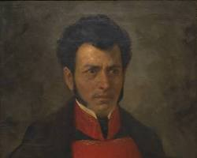

Personajes Ilustres

Miguel Hidalgo
Padre de la Patria
Sacerdote y militar que inició la primera etapa de la Guerra de Independencia de México con el famoso Grito de Dolores.

Josefa Ortiz de Domínguez
La Corregidora
Pieza clave en la conspiración de Querétaro. Al ser descubierta la conspiración, logró avisar a tiempo a los insurgentes para iniciar la lucha.

José María Morelos
El Siervo de la Nación
Líder insurgente en la segunda etapa del movimiento. Definió las bases operativas e ideológicas de la nueva nación independizada.

Vicente Guerrero
Consumador de la Independencia
General que mantuvo viva la llama de la resistencia insurgente en el sur y pactó el Abrazo de Acatempan para lograr la paz y la independencia.